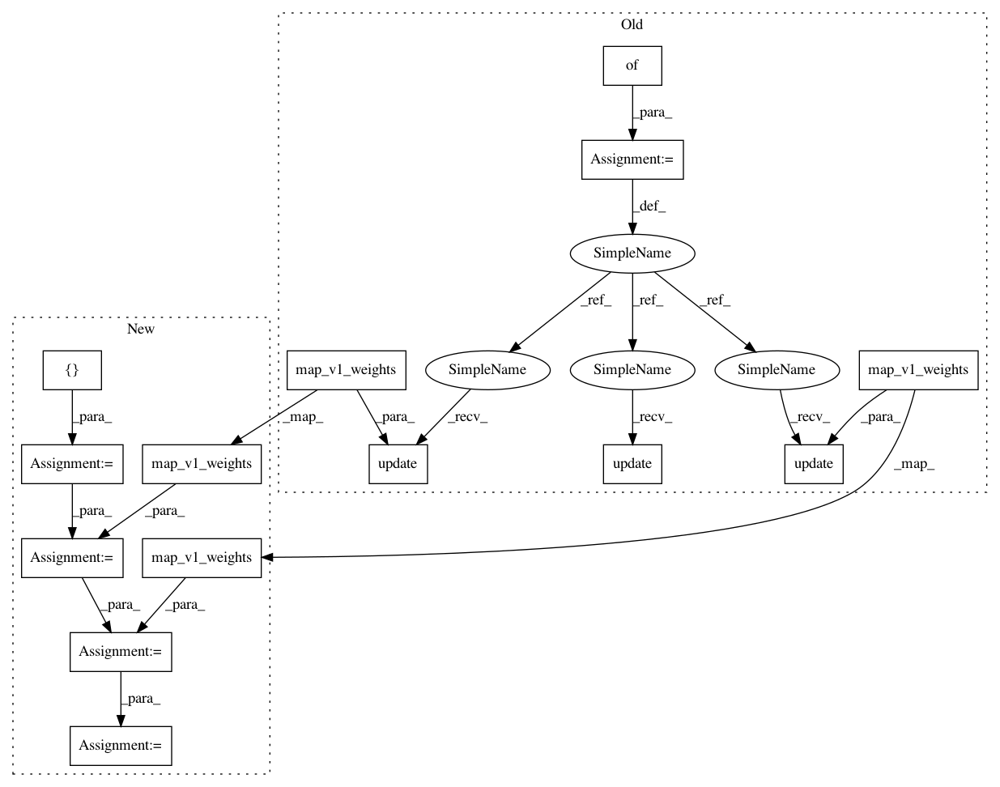

ba28f13e3c6bbeb8521feef63af72557ac08781b,opennmt/decoders/self_attention_decoder.py,SelfAttentionDecoder,map_v1_weights,#SelfAttentionDecoder#Any#,79
Before Change
return self.num_sources == 1
def map_v1_weights(self, weights): // pylint: disable=missing-docstring
m = {}
m.update(self.output_layer.map_v1_weights(weights["dense"]))
m.update(self.layer_norm.map_v1_weights(weights["LayerNorm"]))
for i, layer in enumerate(self.layers):
m.update(layer.map_v1_weights(weights["layer_%d" % i]))
return m
def _run(self,
inputs,
After Change
return self.num_sources == 1
def map_v1_weights(self, weights): // pylint: disable=missing-docstring
m = []
m += self.output_layer.map_v1_weights(weights["dense"])
m += self.layer_norm.map_v1_weights(weights["LayerNorm"])
for i, layer in enumerate(self.layers):
m += layer.map_v1_weights(weights["layer_%d" % i])
return m
def _run(self,
inputs,
In pattern: SUPERPATTERN
Frequency: 3
Non-data size: 14
Instances
Project Name: OpenNMT/OpenNMT-tf
Commit Name: ba28f13e3c6bbeb8521feef63af72557ac08781b
Time: 2019-08-26
Author: guillaume.klein@systrangroup.com
File Name: opennmt/decoders/self_attention_decoder.py
Class Name: SelfAttentionDecoder
Method Name: map_v1_weights
Project Name: OpenNMT/OpenNMT-tf
Commit Name: ba28f13e3c6bbeb8521feef63af72557ac08781b
Time: 2019-08-26
Author: guillaume.klein@systrangroup.com
File Name: opennmt/models/transformer.py
Class Name: Transformer
Method Name: map_v1_weights
Project Name: OpenNMT/OpenNMT-tf
Commit Name: ba28f13e3c6bbeb8521feef63af72557ac08781b
Time: 2019-08-26
Author: guillaume.klein@systrangroup.com
File Name: opennmt/layers/transformer.py
Class Name: MultiHeadAttention
Method Name: map_v1_weights